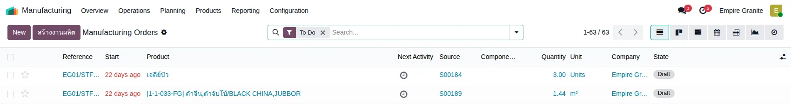
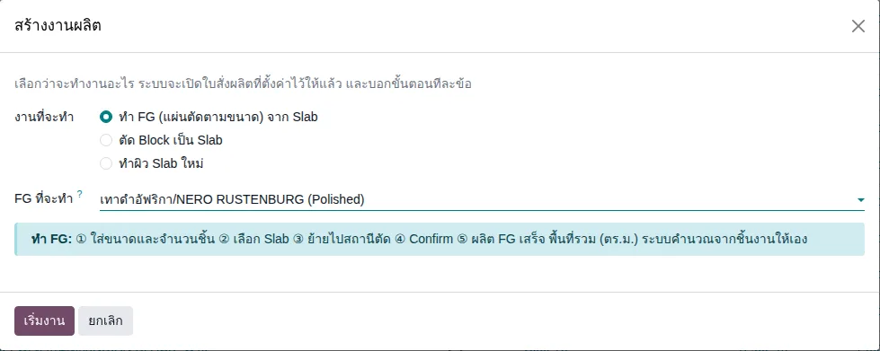
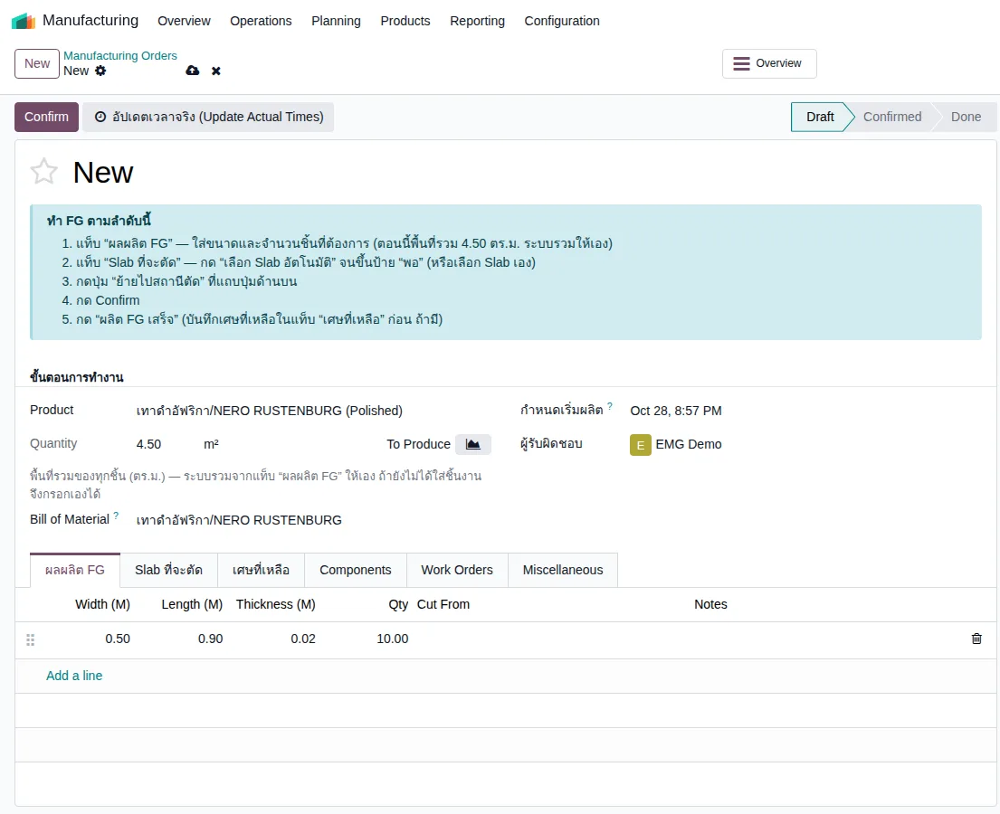
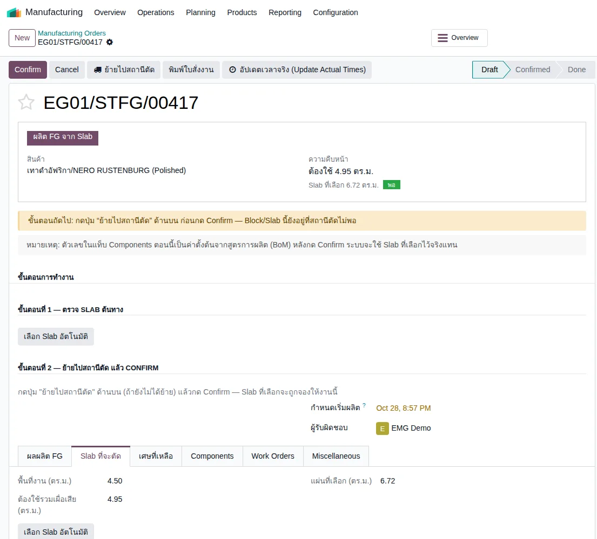
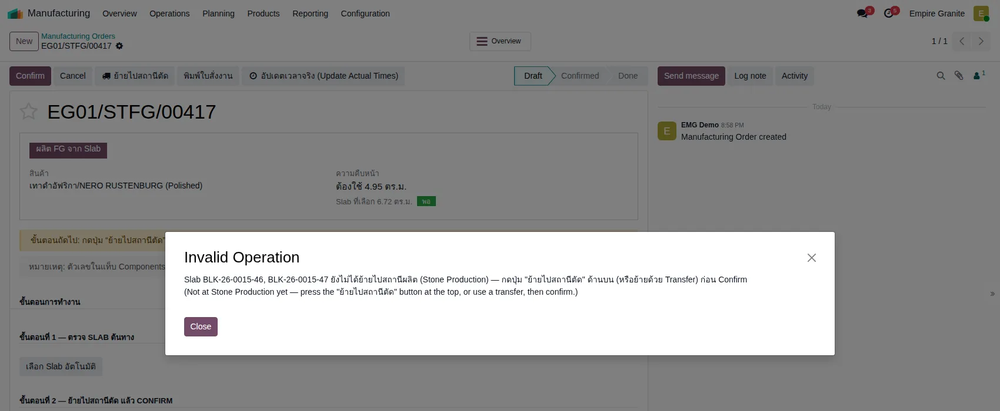
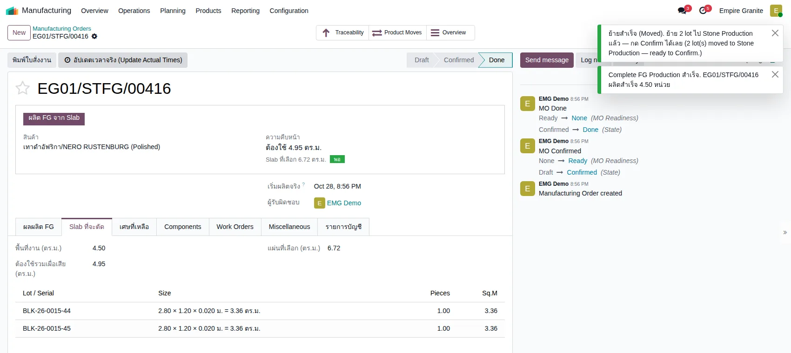

อัปเดตล่าสุด: 28 ตุลาคม 2569 (2026-10-28) · โมดูล stone_slab_inventory 19.0.2.109.46 · ภาพหน้าจอถ่ายจากระบบทดสอบ eg-tst เมื่อ 28 ตุลาคม 2569
บทนี้อธิบายการ เริ่มงานผลิตเอง โดยไม่ผ่านใบขาย เช่น ผลิต FG (แผ่นตัดตามขนาด) เก็บสต็อกไว้ขาย ระบบมีทางเข้าเดียวคือปุ่ม "สร้างงานผลิต" ให้เลือกก่อนว่าจะทำงานอะไร แล้วหน้าใบสั่งผลิตจะบอกขั้นตอนทีละข้อ ตอนนี้ ทั้ง 3 ประเภทงานมีหน้านำทางแล้ว คือ "ทำ FG" (บทนี้) "ตัด Block เป็น Slab" (บทที่ 39) และ "ทำผิว Slab ใหม่" (บทที่ 40)
1. สร้างงานผลิตคืออะไร
สร้างงานผลิต คือหน้าต่างเลือกประเภทงานก่อนเข้าไปกรอกใบสั่งผลิต (MO) ระบบไม่ได้สร้างเอกสารอะไรในขั้นนี้ แค่เปิดใบสั่งผลิตที่ตั้งค่าไว้ให้ตามงานที่เลือก ใบสั่งผลิตเพิ่งถูกสร้างจริงตอนกดบันทึก
2. แนวคิดหลัก 6 ข้อ
- เลือกประเภทงานก่อนเสมอ งาน FG ต้องเริ่มจาก "สร้างงานผลิต" แล้วเลือก FG ที่จะทำ ระบบจะเปิดใบสั่งผลิตให้พร้อมกล่องนำทาง
- เบิก Slab = เลือก Lot ในแท็บ "Slab ที่จะตัด" แล้วกด "ย้ายไปสถานีตัด" ระบบย้าย Slab จากโซนว่างไป Stone Production ให้ ไม่ต้องทำใบโอนเอง
- พื้นที่งานมาจากแถวชิ้นงาน ใส่กว้าง ยาว หนา จำนวนชิ้นในแท็บ "ผลผลิต FG" ระบบรวมเป็น ตร.ม. และใส่ในช่อง Quantity ให้ (ช่องนี้แก้เองไม่ได้เมื่อมีแถวชิ้นงาน) ถ้ายังไม่มีแถวชิ้นงาน กรอก Quantity เองได้
- ระบบเผื่อเสีย พื้นที่ที่ต้องใช้ = พื้นที่งาน + เผื่อเสีย (ตัวอย่าง 4.50 เป็น 4.95 คือเผื่อ 10%) ต้องเลือก Slab ให้ครบพื้นที่นี้ ถึงจะขึ้นป้าย "พอ"
- Slab ถูกใช้ทั้งแผ่น ส่วนที่เหลือที่ไม่ได้บันทึกในแท็บ "เศษที่เหลือ" จะไม่กลับเข้าสต็อก และต้นทุนทั้งแผ่นไปอยู่ที่ FG
- ไม่ต้องมีใบขาย และไม่ต้องใส่เหตุผล สำหรับ FG ที่เป็นแผ่นตัดตามขนาด (ช่องเหตุผลบังคับเฉพาะงานตัด Block)
3. ภาพรวมขั้นตอน
กล่องสีเหลืองคือจุดที่ทำพลาดบ่อย: เลือกประเภทงานให้ถูก และต้องกด "ย้ายไปสถานีตัด" ก่อน Confirm
4. ขั้นตอนทีละหน้าจอ
ตัวอย่างที่ใช้: ผลิต เทาดำอัฟริกา/NERO RUSTENBURG (Polished) ขนาด 50 × 90 ซม. หนา 2 ซม. จำนวน 10 ชิ้น = 4.50 ตร.ม. (ทดลองบน eg-tst ผู้ใช้ emgdemo บริษัท Empire Granite ใบสั่งผลิต EG01/STFG/00416)
4.1 เลือกประเภทงาน
ที่หน้า Manufacturing → Operations → Manufacturing Orders กดปุ่ม สร้างงานผลิต ที่อยู่ข้างปุ่ม New (หรือใช้เมนู Manufacturing → Operations → สร้างงานผลิต (เลือกประเภทงาน) / Stone Slab → สร้างงานผลิต) เลือก ทำ FG (แผ่นตัดตามขนาด) จาก Slab แล้วเลือก FG ที่ช่อง "FG ที่จะทำ" (พิมพ์ชื่อหิน เช่น NERO RUSTENBURG แล้วเลือกรายการที่ลงท้าย (Polished)) กด เริ่มงาน หน้าต่างสรุปขั้นตอนทั้ง 5 ข้อให้ดูก่อน


4.2 ใส่ชิ้นงาน พื้นที่รวมคำนวณให้เอง
ระบบเปิดใบสั่งผลิตที่มี Product และสูตรการผลิต (Bill of Material) ให้แล้ว ด้านบนมีกล่อง "ทำ FG ตามลำดับนี้" ไปแท็บ ผลผลิต FG กด Add a line ใส่ Width 0.50, Length 0.90, Thickness 0.02, Qty 10 ช่อง Quantity เปลี่ยนเป็น 4.50 เอง (เป็นสีเทา แก้ไม่ได้) และกล่องด้านบนแสดง "พื้นที่รวม 4.50 ตร.ม." เมื่อเพิ่มหรือแก้แถว ตัวเลขเปลี่ยนตาม

4.3 เลือก Slab (นี่คือขั้น "เบิก")
ไปแท็บ Slab ที่จะตัด จะเห็น พื้นที่งาน 4.50, ต้องใช้รวมเผื่อเสีย 4.95 และ แผ่นที่เลือก 0.00 กดปุ่ม เลือก Slab อัตโนมัติ ระบบเลือก Slab ว่างให้จนพอ (ตัวอย่างได้ 2 แผ่น แผ่นละ 3.36 ตร.ม. รวม 6.72) หน้าจอเปลี่ยนเป็นการ์ดสรุป "ต้องใช้ 4.95 ตร.ม. · Slab ที่เลือก 6.72 ตร.ม. · พอ" และกล่องนำทางหายไป ถ้าอยากเลือกแผ่นเอง ให้ลบแถวแล้วกด Add a line เลือก Lot และจำนวนชิ้นเอง

4.4 ถ้าลืม "ย้ายไปสถานีตัด" Confirm ไม่ผ่าน
ถ้ากด Confirm ทันที ระบบเด้งข้อความ "Slab ... ยังไม่ได้ย้ายไปสถานีผลิต (Stone Production) — กดปุ่ม ย้ายไปสถานีตัด ด้านบน (หรือย้ายด้วย Transfer) ก่อน Confirm" ให้กลับไปกดปุ่ม ย้ายไปสถานีตัด ที่แถบปุ่มด้านบน

4.5 ย้ายไปสถานีตัด → Confirm → ผลิต FG เสร็จ
กดปุ่ม ย้ายไปสถานีตัด ระบบแจ้ง "ย้ายสำเร็จ ย้าย 2 lot ไป Stone Production แล้ว — กด Confirm ได้เลย" กด Confirm แล้วกด ผลิต FG เสร็จ (ในการทดลองกดได้เลยโดยไม่ต้องกด Start) ระบบแจ้ง "Complete FG Production สำเร็จ ผลิตสำเร็จ 4.50 หน่วย" และสถานะเป็น Done

4.6 ผลที่ได้ในสต็อก
| รายการ | ผลที่ตรวจในระบบ |
|---|---|
| FG ที่ได้ | Lot FG-EG01/STFG/00416-01 ขนาด 0.50 × 0.90 ม. จำนวน 10 ชิ้น คงเหลือ 4.50 ตร.ม. ที่ EG01/Stock/Stone FG |
| Slab ที่ใช้ | 2 แผ่น ใช้ครบทั้งแผ่น ไม่เหลือในสต็อก |
| ต้นทุน | ต้นทุน Slab 2 แผ่นรวม 10,886.40 บาท ไปรวมที่ FG 4.50 ตร.ม. (ประมาณ 2,419 บาท/ตร.ม.) ซึ่งสูงกว่าต้นทุนต่อ ตร.ม. ของ Slab เพราะส่วนที่เหลือ 2.22 ตร.ม. ไม่ได้บันทึกเป็นเศษ |
| เศษที่เหลือ | ไม่มี (ไม่ได้กรอกแท็บ "เศษที่เหลือ" ในการทดลองนี้) |
5. สรุปเงื่อนไขทั้งหมด
| สถานการณ์ | ระบบทำอย่างไร |
|---|---|
| เริ่มจาก สร้างงานผลิต → ทำ FG โดยไม่เลือก FG | ไม่ให้เริ่ม ต้องเลือก FG ก่อน (ทดลองด้วยสคริปต์) |
| เลือก ตัด Block เป็น Slab | ต้องเลือก Block แล้วเปิดใบสั่งตัดพร้อมกล่องนำทาง (ดูบทที่ 39) |
| เลือก ทำผิว Slab ใหม่ | เลือกผิวปลายทางแล้วเปิดใบสั่งผลิตพร้อมกล่องขั้นตอน (ดูบทที่ 40) |
| สร้าง MO ของ FG แผ่นตัดโดยไม่มีใบขาย | ทำได้ ไม่ต้องใส่เหตุผล |
| เพิ่ม/แก้/ลบแถวชิ้นงาน (ผลผลิต FG) ขณะ Draft | Quantity และ พื้นที่งาน เปลี่ยนตามผลรวมของแถว (ทดลอง 4.5 → 5.7 → 6.9 → 4.5) |
| ยังไม่มีแถวชิ้นงาน | Quantity กรอกเองได้ (ค่าเริ่มต้น 1.00) |
| กรอกแถวชิ้นงานแล้วพยายามแก้ Quantity | แก้ไม่ได้ (ช่องเป็นสีเทา) |
| กด Confirm ก่อน "ย้ายไปสถานีตัด" | ไม่ผ่าน มีข้อความเตือนที่เรียกชื่อปุ่มถูกต้อง |
| กด ย้ายไปสถานีตัด แล้ว Confirm แล้ว ผลิต FG เสร็จ | ได้ Lot FG ต่อ 1 แถวชิ้นงาน เข้า Stone FG ใช้ Slab ทั้งแผ่น |
| ใบสั่งผลิตที่มาจากใบขาย | ไม่เปลี่ยน พื้นที่งานยังมาจากรายการชิ้นในใบขายเหมือนเดิม |
| Slab ที่เลือกไม่พอ | การ์ดแสดงป้าย "ยังไม่พอ" และแจ้งให้เพิ่ม Slab (ยังไม่ได้ทดลองกด Confirm ตอนไม่พอ) |
6. สิ่งที่เปลี่ยนจากเดิม
| เดิม (ก่อน 28 ต.ค. 2569 ช่วงค่ำ) | ตอนนี้ |
|---|---|
| เปิดใบสั่งผลิตเปล่าหน้าเดียวสำหรับทุกงาน ผู้ใช้ต้องเดาว่าต้องกรอกอะไร | เริ่มจาก "สร้างงานผลิต" เลือกประเภทงาน (ปุ่ม New เดิมยังอยู่) งาน FG มีกล่องนำทาง 5 ขั้น |
| ต้องรวมพื้นที่ชิ้นงานเองแล้วกรอกใน Quantity ถ้าเลือก Slab ก่อน ช่อง Quantity หาย และพื้นที่ค้างที่ 1.00 ตร.ม. | ระบบรวมจากแถวชิ้นงานให้ ช่อง Quantity แสดงผลรวมและแก้เองไม่ได้ ลำดับการกรอกไม่มีผล |
| ข้อความเตือนบอกให้กด "ย้ายด่วน" ซึ่งไม่มีปุ่มชื่อนี้ | เรียกชื่อปุ่ม "ย้ายไปสถานีตัด" ถูกต้อง |
| หลังกด ย้ายไปสถานีตัด หน้าจอไม่รีเฟรช ต้องรีเฟรชเอง | รีเฟรชอัตโนมัติ |
| ไม่มีคำอธิบายใต้ช่อง Quantity | มีคำอธิบายว่าเป็นพื้นที่รวมของทุกชิ้น (ตร.ม.) |
7. FAQ
ต้องมีใบขายไหม
ไม่ต้อง สำหรับ FG แผ่นตัดตามขนาด สร้างจากเมนู สร้างงานผลิต ได้เลย
ปุ่ม New ที่หน้ารายการ Manufacturing Orders ยังใช้ได้ไหม
ใช้ได้ เปิดใบสั่งผลิตเปล่าเหมือนเดิม ถ้าเลือก FG เองที่ช่อง Product กล่อง "ทำ FG ตามลำดับนี้" ก็ขึ้นเหมือนกัน
เมนู "Finished Goods" ใน Stone Slab ใช้ทำอะไร
เป็นรายการดูใบสั่งผลิต FG ที่มี Slab ที่เลือกไว้แล้ว การสร้างใบใหม่ให้ใช้ สร้างงานผลิต
เลือก Slab เองแทนอัตโนมัติได้ไหม
ได้ ที่แท็บ Slab ที่จะตัด กด Add a line เลือก Lot และจำนวนชิ้น (Lot ที่เลือกได้เป็น Slab ของหินชนิดเดียวกับ FG เท่านั้น)
เศษที่เหลือบันทึกที่ไหน
แท็บ "เศษที่เหลือ" ก่อนกด ผลิต FG เสร็จ (ตารางกว้าง ยาว จำนวนชิ้น ต้นทุน) ยังไม่ได้ทดลองบันทึกเศษในรอบนี้
แถวชิ้นงานหลายแถวได้ไหม
ได้ พื้นที่รวมคือผลรวมทุกแถว (ทดลองรวมหลายแถวด้วยสคริปต์ ส่วนการผลิตจนจบทดลองผ่านหน้าจอเฉพาะ 1 แถว)
8. ข้อจำกัดที่ทราบ
- หน้านำทางทำครบทั้ง 3 ประเภทงานแล้ว (ทำผิว Slab ใหม่ ดูบทที่ 40)
- ทดลองผ่านหน้าจอครบเส้นทางเฉพาะกรณี 1 แถวชิ้นงาน หินชนิดเดียว และเลือก Slab อัตโนมัติ
- ไม่ได้ทดลอง: เลือก Slab เอง, Slab ไม่พอแล้ว Confirm, หลายแถวชิ้นงานจนผลิตเสร็จ, การบันทึกเศษ, การยกเลิก MO หลังย้าย Slab และการ Unreserve
- พื้นที่รวมตามแถวชิ้นงานใช้กับใบสั่งผลิตที่สร้างเองสถานะ Draft เท่านั้น ใบที่ Confirm แล้วไม่เปลี่ยนตามการแก้แถว
- ยังไม่ได้ทำข้อเสนอที่ 4 (เตือนเมื่อพื้นที่แถวไม่ตรงกับ Quantity) เพราะ Quantity ตามแถวอัตโนมัติแล้ว
- เปอร์เซ็นต์เผื่อเสียอ่านจากตัวอย่าง (4.50 → 4.95 = 10%) ค่าจริงตั้งที่บริษัท
- ข้อมูลทดลองบน eg-tst: ใบสั่งผลิต EG01/STFG/00415 และ 00416 (Done ใช้ Slab 4 แผ่นหมดสต็อก) และ 00414 กับอีกหลายใบที่เป็น Draft จากการทดสอบ